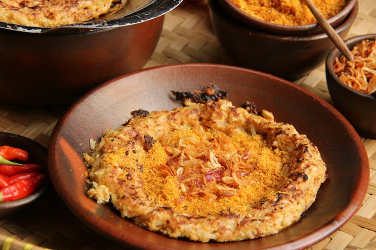
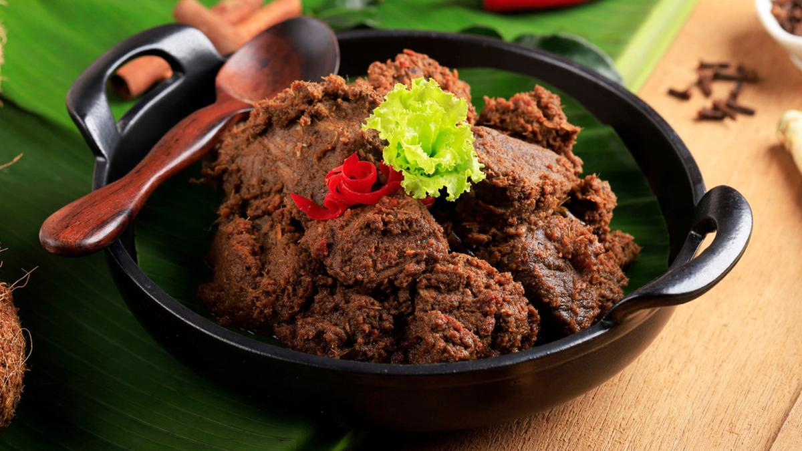

home
explore
MAKANAN KHAS INDONESIA
BIKA AMBON

Bika ambon adalah kue tradisional khas Medan, Indonesia. Kue ini terbuat dari bahan-bahan seperti tepung tapioka, telur, gula, dan santan. Bika ambon dimasak selama 12 jam[1] agar dapat bertahan dalam kondisi terbaik dan sesuai apa yang diinginkan selama empat hari karena setelahnya kue tersebut mulai mengeras. Kue basah ini biasanya memiliki jaring-jaring pada bagian dalam. Bika ambon juga dijual dengan berbagai varian rasa, seperti pandan, coklat, keju, dan lain-lain.

Kerak telur adalah makanan asli daerah Jakarta (Betawi), dengan bahan-bahan beras ketan putih, telur ayam atau bebek, ebi (udang kering yang diasinkan) yang disangrai kering ditambah bawang merah goreng, lalu diberi bumbu yang dihaluskan berupa kelapa sangrai, cabai merah, kencur, jahe, kunyit,sereh halus, merica butiran, garam dan gula pasir. Kerak telor dapat ditemukan pada hari biasa. Anda bisa menemukan kerak telor di sekitar Kota Tua, Jakarta Barat. Menurut sejarah, Kerak Telor sudah ada dari zaman kolonial Belanda, kerak telor diciptakan oleh masyarakat Betawi secara tak sengaja Pada tahun 1920-an.Makanan ini cukup digemari oleh banyak sekali masyarakat Betawi.
Pempek adalah makanan yang dibuat dari daging ikan yang digiling lembut yang dicampur tepung kanji atau tepung sagu, serta komposisi beberapa bahan lain seperti telur, bawang putih yang dihaluskan, penyedap rasa, dan garam. Pempek biasanya disajikan dengan kuah yang disebut cuka yang memiliki rasa asam, manis, dan pedas. Pempek merupakan makanan khas Palembang - Sumatera Selatan.
Pada tahun 1880-an, penjual biasa memikul satu keranjang penuh pempek sambil berjalan kaki berkeliling menjajakan dagangannya.
Di kota nya pempek , palembang. cara makan pempek yang benar adalah dengan mengunakan mangkuk kecil sebagai tempat cukonya lalu di makan pempeknya setelah itu pempek dicocol dan cukonya diseruput untuk menambah rasanya nikmatnya.

Rendang (bahasa Minangkabau: randang; Jawi: رندڠ) adalah hidangan berbahan dasar daging yang dihasilkan dari proses memasak suhu rendah dalam waktu lama dengan menggunakan aneka rempah-rempah dan santan. Proses memasaknya memakan waktu berjam-jam (biasanya sekitar empat jam) hingga yang tinggal hanyalah potongan daging berwarna hitam pekat dan dedak. Dalam suhu ruangan, rendang dapat bertahan hingga berminggu-minggu. Rendang yang dimasak dalam waktu yang lebih singkat dan santannya belum mengering disebut kalio, berwarna cokelat terang keemasan
Rendang dapat dijumpai di Rumah Makan Padang di seluruh dunia.[butuh rujukan] Masakan ini populer di Indonesia dan negara-negara Asia Tenggara lainnya, seperti Malaysia, Singapura, Brunei, Filipina, dan Thailand. Di daerah asalnya, Minangkabau, rendang disajikan di berbagai upacara adat dan perhelatan istimewa. Meskipun rendang merupakan masakan tradisional Minangkabau, teknik memasak serta pilihan dan penggunaan bumbu rendang berbeda-beda menurut daerah.
Pada 2011, rendang pernah dinobatkan sebagai hidangan yang menduduki peringkat pertama daftar World's 50 Most Delicious Foods (50 Hidangan Terlezat Dunia) versi CNN International. Pada 2018, rendang secara resmi ditetapkan sebagai salah satu dari lima hidangan nasional Indonesia
Rendang dimanfaatkan sebagai bantuan pangan bagi korban bencana alam karena tahan lama dan kandungan gizinya, seperti pada gempa bumi Lombok 2018, gempa bumi dan tsunami Sulawesi 2018, banjir Bengkulu 2019, badai Siklon Seroja 2021, dan gempa bumi Cianjur 2022.
Bumbu rendang diolah secara fusion (mencampur) dengan makanan lain seperti spageti, mi, burger, hingga susyi

Sate (Jawa: ꦱꦠꦺ, translit. sate, bahasa Inggris: satay) adalah makanan yang terbuat dari daging yang dipotong kecil-kecil dan ditusuk sedemikian rupa dengan tusukan lidi tulang daun kelapa atau bambu, kemudian dipanggang menggunakan bara arang kayu. Sate disajikan dengan berbagai macam bumbu yang bergantung pada variasi resep sate. Daging yang dijadikan sate antara lain daging ayam, kambing, domba, sapi, babi, kelinci, kuda, dan lain-lain
Sate diketahui berasal dari Jawa, Indonesia, dan dapat ditemukan di mana saja di Indonesia dan telah dianggap sebagai salah satu masakan nasional Indonesia Sate juga populer di negara-negara Asia Tenggara lainnya seperti Malaysia, Singapura, Filipina, dan Thailand. Sate juga populer di Belanda karena dipengaruhi masakan Indonesia yang dulu merupakan koloninya.
Sate adalah hidangan yang sangat populer di Indonesia, dengan berbagai suku bangsa dan tradisi seni memasak (lihat Masakan Indonesia) telah menghasilkan berbagai jenis sate. Di Indonesia, sate dapat diperoleh dari pedagang sate keliling, pedagang kaki lima di warung tepi jalan, hingga di restoran kelas atas, serta kerap disajikan dalam pesta formal dan non-formal. Resep dan cara pembuatan sate beraneka ragam bergantung variasi dan resep masing-masing di tiap daerah. Hampir segala jenis daging dapat dibuat sate. Sebagai negara asal mula sate, Indonesia memiliki variasi resep sate yang banyak.
Biasanya sate diberi saus, bisa berupa bumbu kecap, bumbu kacang, atau yang lainnya, biasanya disertai acar dari irisan bawang merah, mentimun, dan cabai rawit. Sate dimakan dengan nasi hangat atau bisa juga disajikan dengan lontong atau kupat ataupun hanya sate saja.
Hidangan internasional yang mirip sate antara lain yakitori dari Jepang, shish kebab dari Turki, shashlik dari Kaukasia, chuanr dari Tiongkok, dan sosatie dari Afrika Selatan. Sate terdaftar sebagai peringkat ke-14 dalam World's 50 most delicious foods (50 Hidangan Paling Lezat di Dunia) melalui jajak pendapat pembaca yang digelar oleh CNN Go pada 2011.